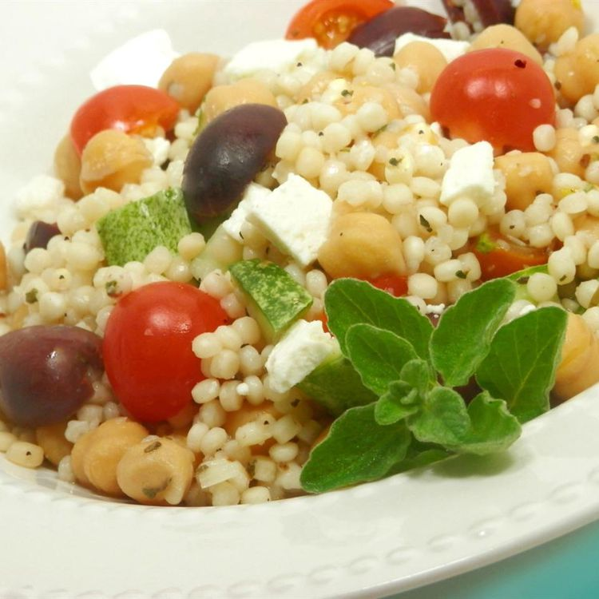

Greek Couscous Salad

Description
A fresh new salad!!
Ingredients
- 1/2 cup water
- 1/4 cup chicken broth
- 1/2 cup pearl couscous
- 1 cup rinsed and drained chickpeas
- 1/4 cup chopped sun-dried tomatoes
- 1/4 cup sliced Kalamata olives
- 2Tbsp crumbled feat cheese
- 1Tbsp white wine vinegar
- 1 1/2Tsp lemon juice
- 1Tsp dried oregano
- 1/2Tsp ground black pepper
Steps
- Pour water and chicken broth into a saucepan; stir in the garlic and bring to a boil. Stir in pearl couscous, cover the pan, and remove from heat. Allow couscous to stand until water has been absorbed, about 5 minutes; fluff with a fork. Allow couscous to cool to warm temperature.
- Lightly toss couscous, chickpeas, sun-dried tomatoes, olives, and feta cheese in a large serving bowl.
- To make the dressing: Mix white wine vinegar, lemon juice, oregano, and black pepper in a small bowl until well combined. Pour over couscous mixture; toss again to serve.